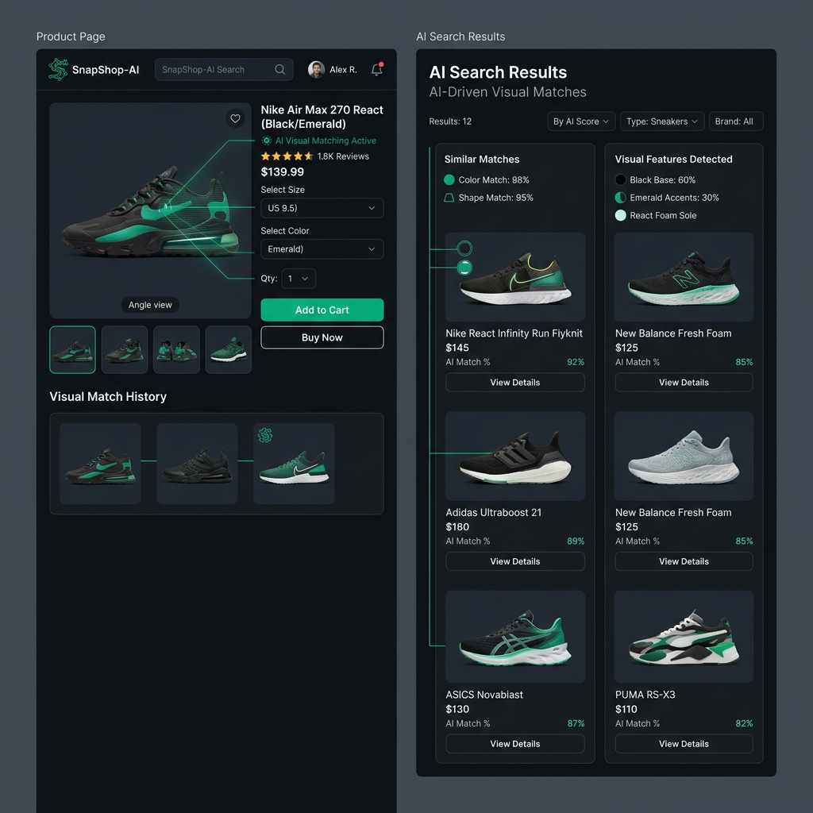
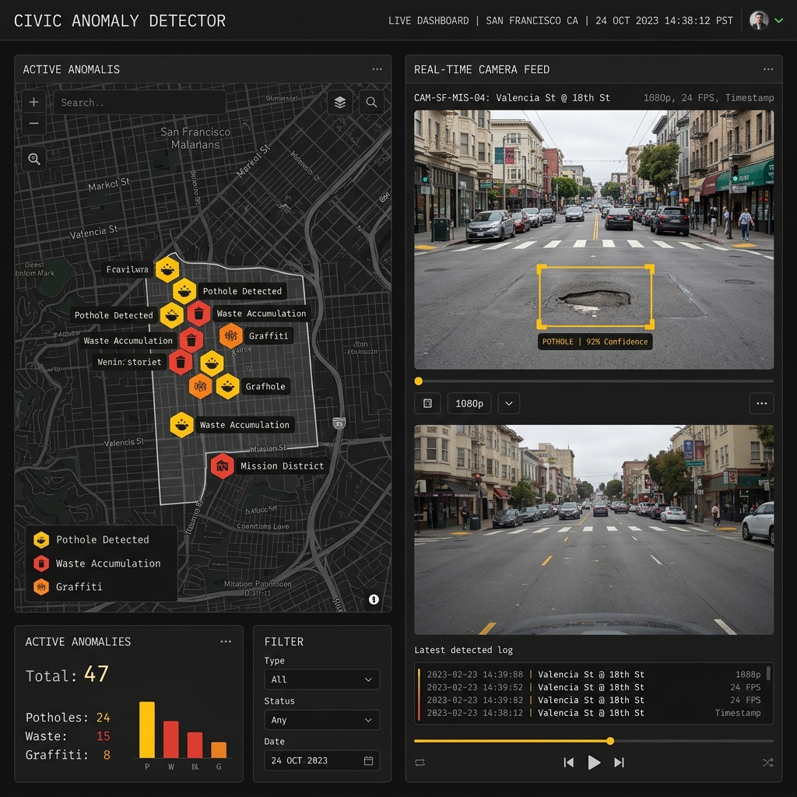
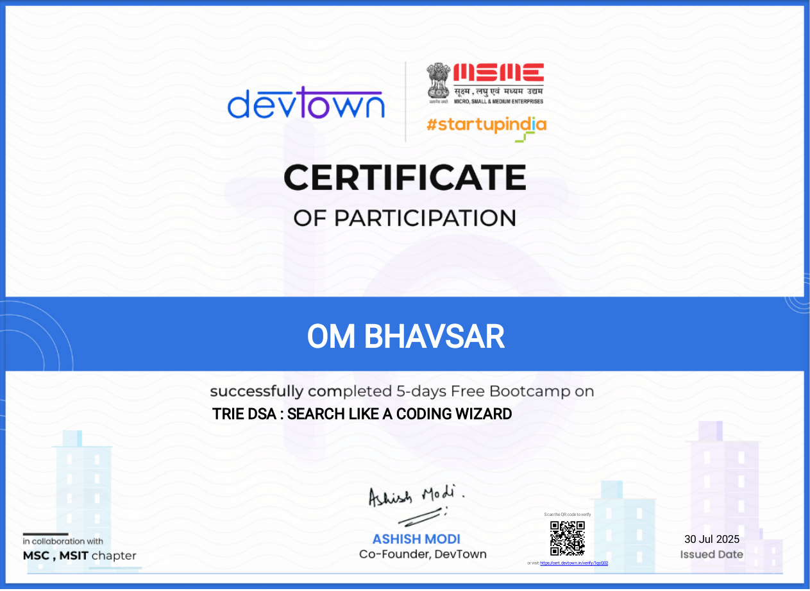
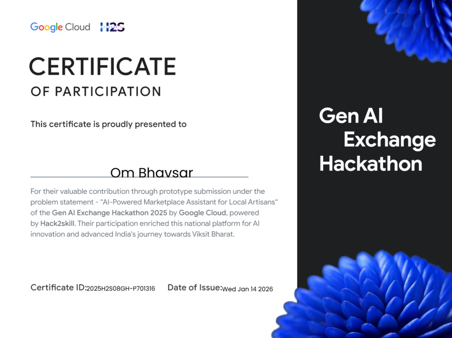
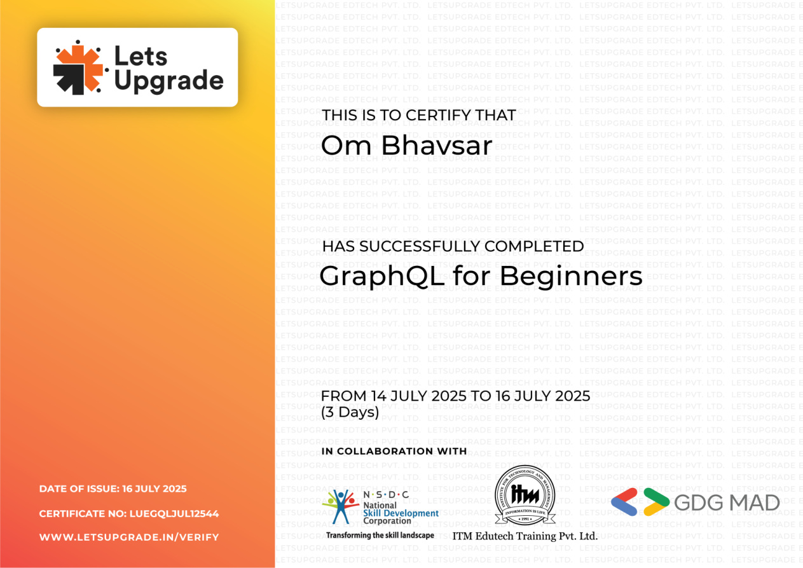
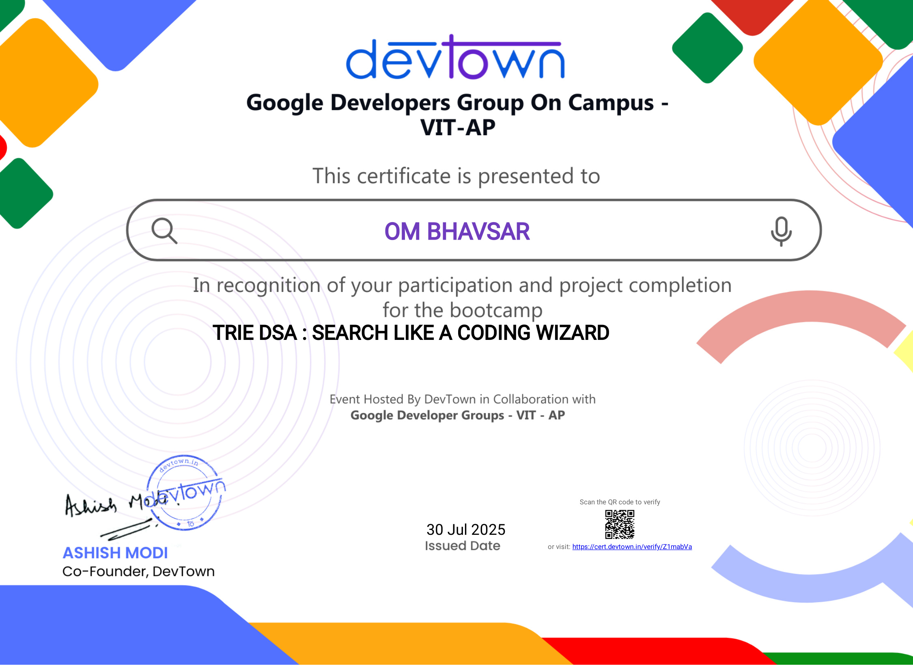

Om Bhavsar
Computer Science (AIML) Student building practical AI-powered, data-driven, and civic-tech solutions.
Computer Science (AIML) Student building practical AI-powered, data-driven, and civic-tech solutions.
Developed an Article Curator using Node.js APIs and Python-based data analysis dashboards. Built SnapShop AI website and contributed to IndiaAccelerator-OpenXAI-2025.
Worked on civic data analysis and anomaly detection with focus on pothole detection and urban infrastructure monitoring for the Civic Anomaly Detector project.
Completed internship projects applying machine learning models on real-world datasets and improved practical analytics workflow skills.
Participated in internship training and project tasks focused on data science fundamentals.
Focused on machine learning engineering, data pipelines, analytics, and software architecture.
Maharashtra State Board.
Maharashtra State Board.
Traditional e-commerce relies entirely on keywords, which fails when users have an image of what they want but don't know how to describe it. SnapShop-AI implements AI-powered visual similarity search, allowing users to upload a photo and instantly find matching clothing products.
The platform splits processing between a fast Node.js-based application server and an isolated Python analytics microservice that extracts visual feature vectors and conducts multi-dimensional similarity mapping.

Urban infrastructure inspection is slow and costly. The Civic Anomaly Detector automates monitoring by processing street camera feeds or mobile images to detect infrastructure damage, specifically focusing on pothole classification and warning triggers.
The system leverages object detection algorithms trained to localize structural anomalies. Upon detection, it pins the exact location onto a mapping dashboard for civic teams to review.

Machine learning classification model to analyze and predict customer buying habits.
Exploratory analytics and density visualization maps focusing on traffic accident hotspots.
Interactive profile avatar creation web application showcasing canvas styling techniques.
Research paper on SSRN showcasing the integration structures of SnapShopAI.
JETIR publication covering research on Laser applications and optical structures.
JETIR research paper focusing on chemical formulations and actions of Antifoaming Agents.
Analyzing and identifying customer purchase patterns helps businesses target advertisements and maximize conversion metrics. This project constructs a predictive model trained on historical user demographics, browsing times, and interaction histories.
Includes dataset cleansing, categorical encoding (One-Hot), feature scaling, and addressing class imbalances to guarantee high generalization accuracy during cross-validation.
Identifying where and why traffic accidents happen is crucial for city planning. This project processes multi-year incident datasets to isolate road conditions, weather patterns, and time intervals contributing to high accident frequencies.
Leverages density mapping and distribution charts to highlight high-risk coordinates, turning raw rows into spatial maps for city engineers.
An interactive, client-side web application allowing users to customize, layer, and export personalized cartoon avatar images directly from their browser.
Combines canvas API operations to stack hair, expression, background, and accessory graphics dynamically based on selection sliders, outputting to a clean PNG download stream.
A formal scientific paper outlining the deployment architectures and similarity search algorithms integrated into the SnapShop-AI platform, evaluating user engagement and server response latencies.
Published in SSRN. Explores how deep feature extraction layers map product similarity to lower customer browse-to-cart latency.
A published physics paper exploring laser applications, optical alignment principles, and wave behaviors across varying industrial sectors.
Published in the Journal of Emerging Technologies and Innovative Research (JETIR). Reference ID: JETIR2305719.
A published research paper detailing the categorization, formulation mechanisms, and effectiveness of various Antifoaming Agents in industrial processes.
Published in the Journal of Emerging Technologies and Innovative Research (JETIR). Reference ID: JETIR2302235.
Python, Java, JavaScript, SQL, HTML/CSS
TensorFlow, PyTorch, Scikit-learn, Generative AI Tools
OpenCV, Data Analysis, Statistical Models
Node.js, Express, REST APIs, Python Flask/FastAPI
React, Modern HTML5, Responsive CSS3
PostgreSQL, MySQL, SQLite
Git, GitHub, Collaborative Workflows
PowerBI, Tableau, Excel analytics






That's it, you've reached the end of my portfolio. Thanks for visiting :)
If you enjoyed the journey, let's build the next chapter together.
You're the 1,245th visitor.